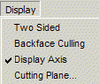

|  |
| Two
Sided |
If enabled, two-sided
lighting will be used. |
| Backface
Culling |
If enabled, then
back-facing faces will not be drawn. |
| Display
Axis |
If enabled, axis
will be drawn on the minimum edges of the object bounding box. |
| Cutting
Plane... |
Invokes a cutting
plane panel for displaying a cutting plane. |
|